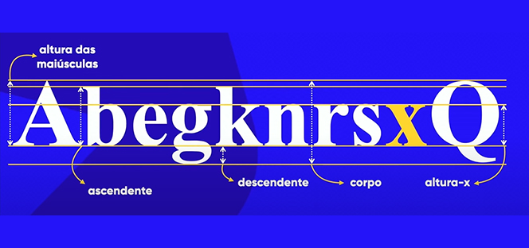
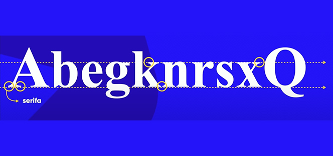
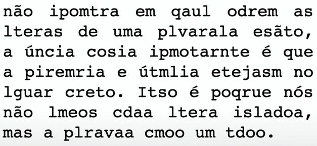
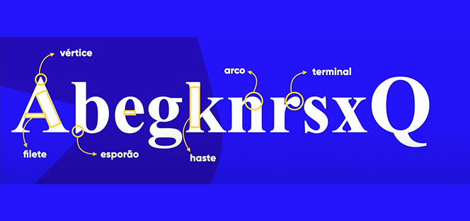
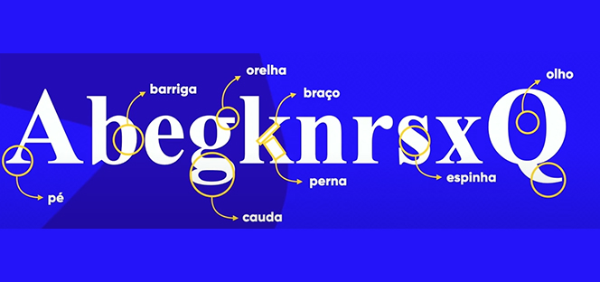
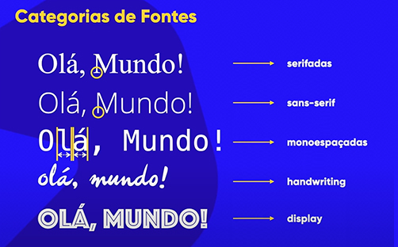

Estudo Básico da Tipografia
Anatomia do tipo
Itens métricos
Curiosidade: a letra "x" é o ponto de partida para todas as fontes. O primeiro passo quando se vai criar uma fonte é desenhar o "x" minúsculo, pois existe uma métrica chamada "altura x", que vai definir a altura base de todas as letras minúsculas, com base na letra "x". São exemplos acimas, itens métricos.
Itens anatômicos
Obs: Nem todas as fontes tem os componentes, como a serifa.
A serifa é um pequeno traço que gera no final de algumas fontes. Ela cria uma linha imaginária (como a linha pontilhada na foto)
Ela serve para guiar sua leitura, facilitando o trabalho do nosso cerebro. Dando um exemplo, como o texto abaixo, não importa a ordem das letras dentro de uma palavra, pois o nosso cerebro consegue ler perfeitamente o que está escrito, com a ajuda da serifa. Não significa que sem serifa não conseguiríamos, mas a serifa traz uma facilidade maior para termos uma boa leitura guiada.
Partes geométricas
Componentes anatomicos geométricos:
- haste
- filete
- arco
- esporão
- vértice
Componentes que correspondem a partes do corpo
- braço
- perna
- pé
- espinha
- barriga
- olho
- orelha
- calda
Glifos: cada letra é um glifo, sendo o conjunto de todos os glifos de uma determinada família, chamamos ele de fonte.
Família tipográfica
São vários formatos de uma mesma fonte, como: light, normal, seminegrito, negrito, extrangrito, itálico. Porém, nem todas fontes possuem uma família tipográfica grande.
Categorias de Fontes
- Srifadas: fonte serifada.
- Sans-serif: sem serifa (sans-serif vem do frânces).
- Monoespaçadas: o tamanho lateral são iguais de uma letra para a outra.
- Handwriting: fonte de script, fonte escriptada; tenta simular a escritura a mão, a caligrafia humana.
- Display: fontes comemorativas, aquela que não se preocupa a obedecer as regras anatomicas. Geralmente são fontes que te levam a uma ideia ou a um filme.
IMPORTANTE: A recomendação é que se use em textos muitos longos para impressão em tela, dê preferência com fontes sans-serif, e tomar cuidado com fontes com espaços laterais muitos curtos para não gerar uma leitura comoda. E devemos usar o contraste de cor para aplicar nas leituras.
Recomenda-se: branco no fundo e preto na tela.
Fontes em CSS ex017
Adicionamos dentro do nosso CSS o body {font-family: 'fonte';}. Importante ressaltar que quando a fonte possuir duas ou mais palavras, devem estar dentro de aspas simples.
Exemplo:
body { font-family: Arial; }.
body { font-family: 'Times New Roman'; }
Geralmente usamos o seguinte tipo de declaração, chamada de safe combination (combinação segura):
body { font-family: Arial, Helvetica, sans-serif; }, pois, se caso o dispositivo não encontrar a fonte Arial, ele buscará pela fonte Helvetica, ou sans-serif.
Podemos pesquisar no google por: "css web safe font combinations".
Um outro exemplo, de uma forma genérica, podemos dizer ao navegador que queremos apenas uma fonte sem serifa: font-family: sans-serif;, então todos dispositivos poderão ler, pois todos dispositivos têm fontes serifadas.
- sans-serif;
- serif;
- monospace;
Podemos usar também:
body { font-family: Arial, Helvetica, monospace; }
Font-Size
No font-size, temos as medidas:
- Medidas absolutas
- cm
- mm
- in : polegada
- px
- pt
- pc
- Medidas Relativas
- em : relativa ao M maiúsculo de uma determinada fonte;
- ex : relativa ao x de uma determinada fonte;
- rem : igual ao em, porém relativa a fonte que está configurada no 'body';
- vw : view width, largura da view port
- vh: altura da view port
- % : porcentagem
- ...
Ponto (pt) e paica (pc), são medidas da tipografia de papel (não é recomendado utilizar em material exibido em telas).
Geralmente o tamanho comum da fonte é de 16px
Variações
font-weight
font-weight - peso da fonte.
Existem alguns pesos literais. São eles: lighter, normal, bold, bolder.
Há também as variações númericas que começam em 100 e terminam em 900.
body { font-weight: bolder; } / body { font-weight: 400; }
Importante lembrar que:
- Weight = peso
- Width = largura.
- Height = altura
font-style
Através do font-style podemos escolher o tipo de fonte normal e itálico.
body { font-style: normal; } / body { font-style: italic; }.
text-decoration
Uma das funções do text-decoration é deixar o texto sublinhado.
body { text-decoration: underline; }
Exemplo:
h1 {
font-family: 'Work Sans', sans-serif;
font-weight: bolder;
font-size: 1em;
font-style: italic;
}
Shorthand
O shothand, é a "mãozinha" (vou ter dar uma mãozinha).
Veja como funciona o shorthand font na prática:
- font-style -> font-weight -> font-size -> font-family (deve-se seguir essa ordem)
h1 {
font: talic bolder 1em 'Work Sans', sans-serif;
}
Importação de Fontes
@font-face
Ao importarmos uma fonte interna atravér do:
@fonte-face {
font-family: 'capture_it';
src: url('_fonts/capture_it.ttf') format('truetype'), url('_font/capture.it.otf') format('opentype');
}
Na parte "format();", vimos o truetype e o opentype. O format define qual formato do arquivo, sendo:
- opentype (otf)
- truetype (ttf)
- embedded-opentype
- truetype-aat (apple advanced typography)
- svg
Site para detectar fontes em imagens: whatfontis.com